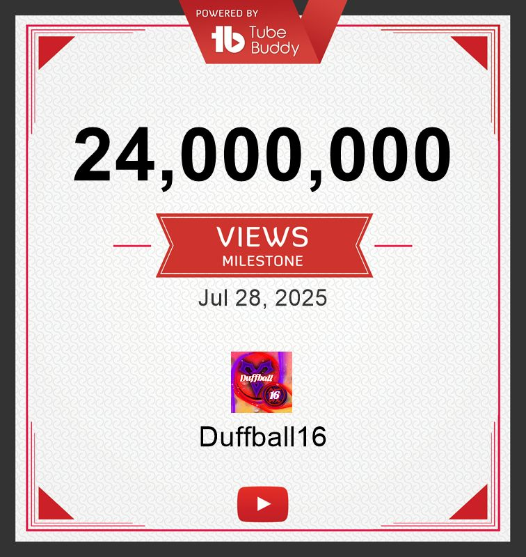
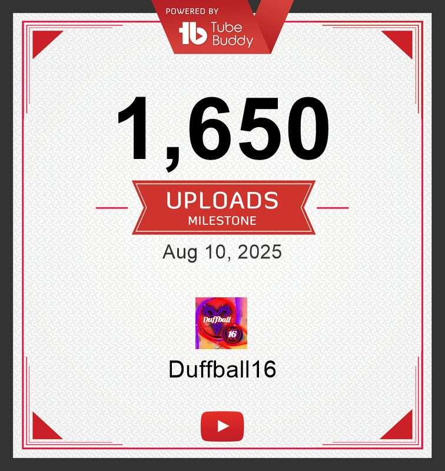
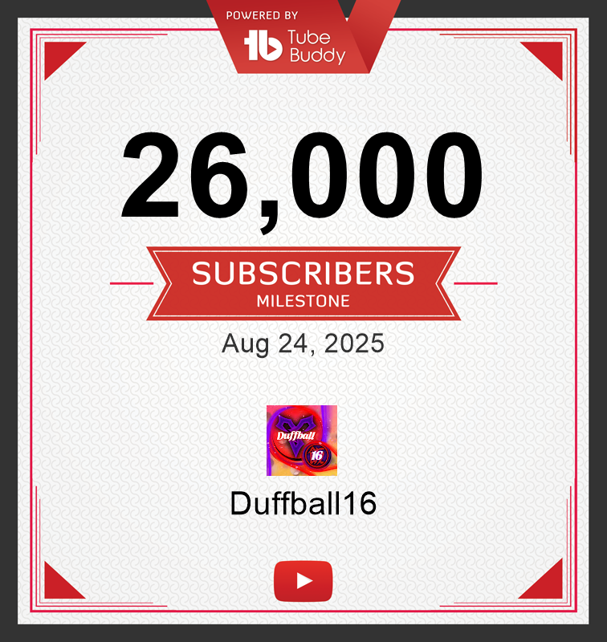
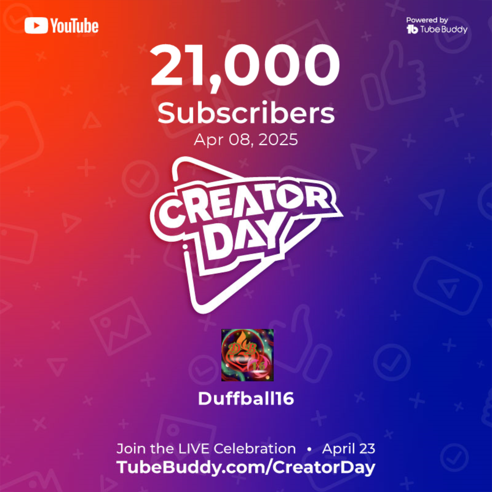
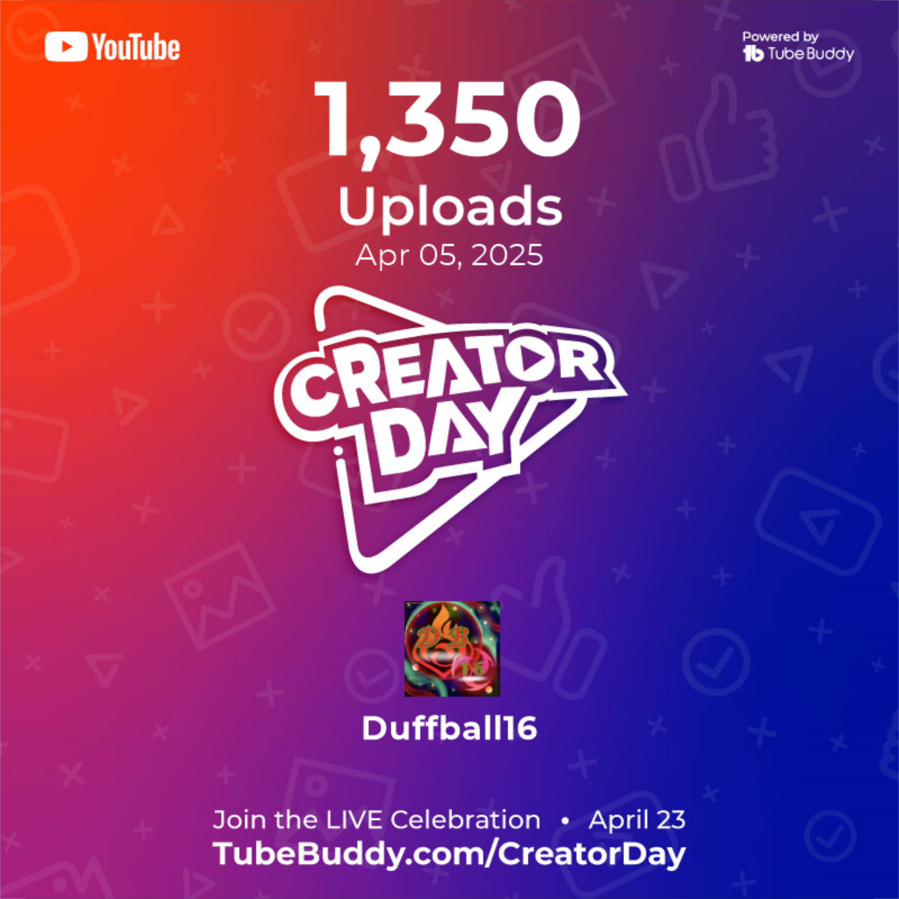
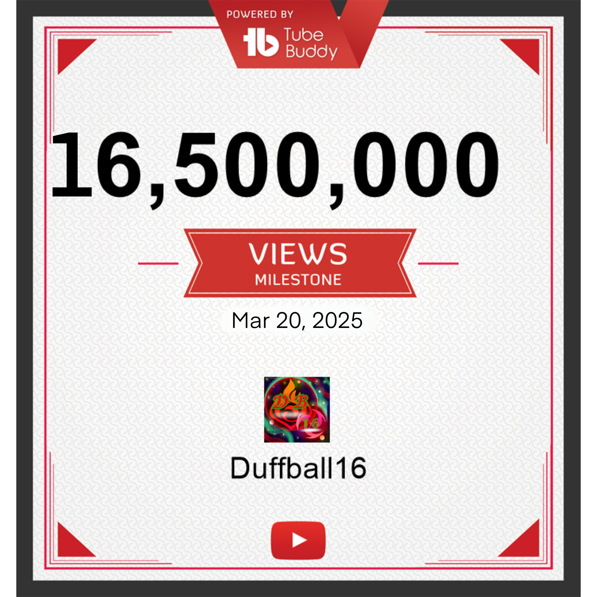

Subscribers
0
Current channel subscribers

Community // Live YouTube Data

Duffball16 // Community
Duffball16 is more than a channel. The viewers, comments, live chats, ideas and shared milestones are part of what gives the whole project its personality.
01 // Community first
Every stream, video and Short is made with the audience in mind. Suggestions, reactions, support and shared goals turn individual uploads into a growing history that the Duffinians can look back on together.
02 // Milestone archive
This grid is intentionally reusable. To add a future milestone,
duplicate one <article class="milestone-card">
block and change the image, title, date and text.

24 MIL is actually crazy. Reaching this many viewers across the channel is hard to even imagine. Thank you for being part of the fun, laughs and jokes — and for helping the community keep growing.

Reaching 1,650 videos is a huge consistency milestone and another step toward the 2,000 mark. Keep the content ideas coming and let’s see how far the archive can grow.

Looking back at how far the channel has come is a reminder that goals can feel impossible until they are suddenly part of your history. Thank you for all the memories already made.

Thank you for this achievement and for sticking around through the channel’s journey. Every subscriber helps turn Duffball16 into a bigger shared project.

More than a thousand uploads once sounded impossible. Reaching 1,350 shows how much content has been made along the way — with 2,000 waiting further ahead.

Crossing 15 million channel views was one of the biggest achievements of the journey at the time. The next target was already waiting: 20 million and beyond.